Overview
This article will demonstrate more advanced content, including how to:
- Use different fonts
- Visualise spatial data
- Change the
stat - Use non-supported aesthetics
- Use delayed evaluation
- Add a legend from layers each set to a single value
- Add contrasting dark or light text on polygons
library(ggblanket)
library(ggplot2)
library(dplyr)
library(stringr)
library(tidyr)
library(palmerpenguins)1. Use different fonts
The showtext and sysfonts packages support the use of different fonts
from Google. The *_mode theme functions provide
base_family, title_family,
subtitle_family and caption_family arguments.
Fonts can be identified on the Google fonts website.
sysfonts::font_add_google("Covered By Your Grace", "grace")
sysfonts::font_add_google('Roboto Slab', 'roboto_slab')
sysfonts::font_add_google('Syne Mono', 'syne')
showtext::showtext_auto(enable = TRUE)
penguins |>
mutate(across(sex, \(x) str_to_sentence(x))) |>
gg_point(
x = flipper_length_mm,
y = body_mass_g,
col = sex,
facet = species,
title = "palmerpenguins::penguins body mass by flipper length",
subtitle = "Palmer Archipelago, Antarctica",
caption = "Source: Gorman, 2020",
theme = light_mode_rt(
base_size = 11,
base_family = "grace",
title_family = "roboto_slab",
subtitle_family = "syne"),
)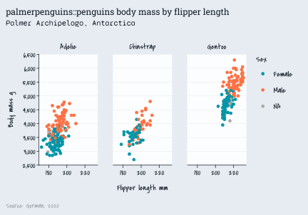
showtext::showtext_auto(enable = FALSE)2. Visualise spatial data
As ggblanket wraps the ggplot2::geom_sf and
ggplot2::geom_raster functions, spatial vector and array
data can be visualised.
sf::st_read(system.file("shape/nc.shp", package = "sf"), quiet = TRUE) |>
gg_sf(col = AREA) +
ggeasy::easy_remove_axes()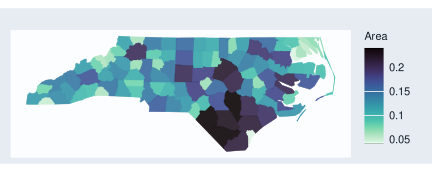
stars::read_stars(system.file("tif/L7_ETMs.tif", package = "stars")) |>
tibble::as_tibble() |>
gg_raster(
x = x,
y = y,
col = L7_ETMs.tif,
facet = band,
col_title = "L7 ETMs",
) +
ggeasy::easy_remove_axes() 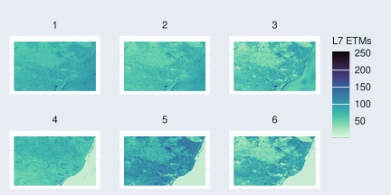
3. Change the stat
The default stat of each gg_* function can
be changed.
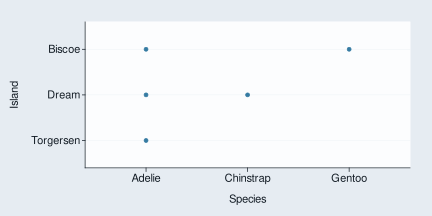
penguins |>
gg_pointrange(
x = species,
y = flipper_length_mm,
stat = "summary",
na.rm = TRUE,
size = 0.1,
x_labels = \(x) str_sub(x, 1, 1),
)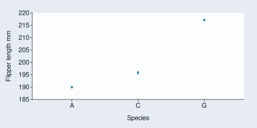
library(ggforce)
ggplot2::economics |>
slice_head(n = 35) |>
gg_path(
x = date,
y = unemploy,
stat = "bspline",
n = 100,
linewidth = 1,
) 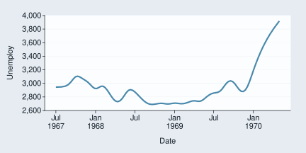
4. Use non-supported aesthetics
Most functions have the commonly needed aesthetics directly available
as an argument. For those that are not available, you can either use
mapping argument. The mapping argument
provides access to the size, shape,
linetype and linewidth aesthetics within the
gg_* function.
penguins |>
gg_point(
x = flipper_length_mm,
y = body_mass_g,
col = species,
mapping = aes(shape = species),
) +
labs(shape = "Species")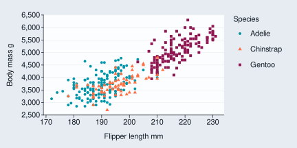
5. Use delayed evaluation
As the x, y, col and
alpha aesthetic arguments require a unquoted variable, you
cannot apply a function to these. However, you can for aesthetics within
the mapping argument. This is useful for delayed evaluation
with the ggplot2::after_stat function.
penguins |>
gg_histogram(
x = flipper_length_mm,
mappingRp = aes(y = after_stat(density)),
facet = species,
)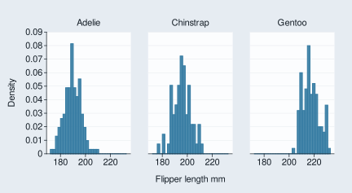
faithfuld |>
gg_contour(
x = waiting,
y = eruptions,
z = density,
mapping = aes(colour = after_stat(level)),
bins = 8,
)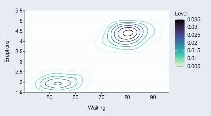
6. Add a legend from layers each set to a single value
To add a legend from layers each set to a single value, you can
likewise use the mapping argument.
mpg |>
gg_point(
x = displ,
y = hwy,
mapping = aes(colour = "Observation"),
col_pal = c(pal_navy, pal_teal),
col_title = "",
) +
geom_smooth(mapping = aes(colour = "Model"), se = FALSE) +
guides(colour = guide_legend(reverse = TRUE))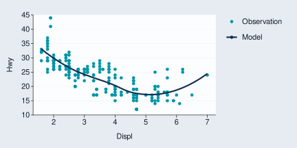
7. Add contrasting dark or light text on polygons
A method was developed by @teunbrand to colour text on polygons using a dark or light colour, which is determined based on the underlying polygon colour.
contrast <- function(col,
col_pal_dark = "black",
col_pal_light = "white") {
out <- rep(col_pal_dark, length(col))
light <- farver::get_channel(col, "l", space = "hcl")
out[light < 50] <- col_pal_light
out
}
aes_contrast <- function(col_pal_dark = "black", col_pal_light = "white") {
ggplot2::aes(
colour = ggplot2::after_scale(
contrast(.data$fill,
col_pal_dark = col_pal_dark,
col_pal_light = col_pal_light)
)
)
}
penguins |>
count(species, sex) |>
gg_col(
x = sex,
y = n,
col = species,
col_pal = c("#0095A8", "#112E51", "#FF7043"),
position = position_dodge2(preserve = "single"),
width = 0.75,
x_labels = \(x) stringr::str_to_sentence(x),
) +
geom_text(
mapping = aes(y = n - (max(n * 0.04)), label = n, !!!aes_contrast()),
position = position_dodge2(width = 0.75, preserve = "single"),
show.legend = FALSE,
)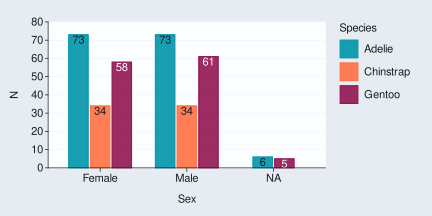
mtcars |>
corrr::correlate() |>
corrr::stretch() |>
mutate(across(c(x, y), str_to_sentence)) |>
gg_tile(
x = x,
y = y,
col = r,
x_title = "",
y_title = "",
x_expand = c(0, 0),
y_expand = c(0, 0),
col_pal_na = pal_light_mode["plot"],
col_limits = c(-1, 1),
col_rescale = scales::rescale(c(-1, 0, 1)),
col_title = "r",
) +
geom_text(
mapping = aes(label = round(r, 1), !!!aes_contrast()),
show.legend = FALSE,
)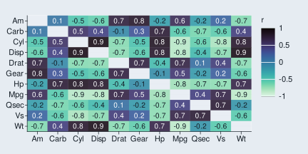